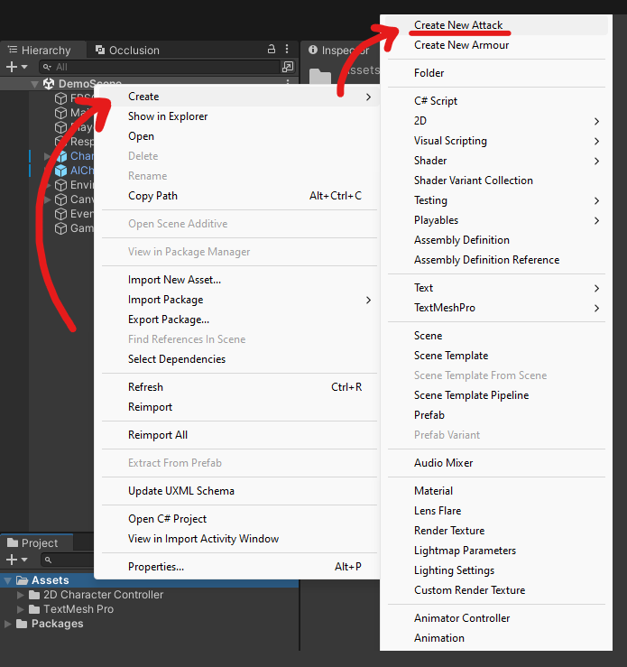
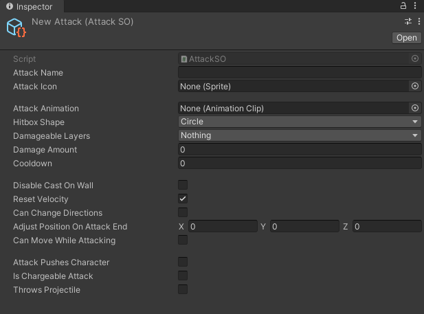

AttackSO
SWITCH TO SCRIPTINGOverview
The AttackSO is a scriptable object, allowing users to customize and create attack configurations for their humanoid characters.
This component pairs well with CombatSystemProjectile and CharacterCombat components found in the asset.
Create New Attack
To create a new attack, simply access the menu item by navigating to the "Assets" folder within your project files. From there, right-click and select "Create," then choose "Create New Attack." This action sets you up with a scriptable object ready to define and adjust attacks in your project.

Attack Configuration
Now that you've created your attack, it's time to tailor its behaviour. Whether it's a swift single strike or a charged-up assault,
you can adjust the parameters to suit your needs.
Locate the attack scriptable object within your project files and open it for editing. Inside the Inspector window, you'll discover a range of
options available for fine-tuning different aspects of the attack. These settings offer the flexibility to tailor the attack's behavior according
to your preferences, whether you aim to execute swift combos with quick strikes or unleash powerful blows with charged attacks.
The image below illustrates how the default attack will appear once it's been created.
Make sure to hover over each property for tooltips to appear if you have any questions about what the property does.

Restrictions
Feel free to experiment with the values and explore the combinations available, but do note that there are some restrictions to what you can do. For instance,
it's not possible to set an attack where the character can move while the attack is being performed simultaneously with the attack pushing the character.
As the image below demonstrates, if the "Can Move While Charging" property is set to true, the "Attack Push Character" option will be disabled.

Damage Calculation
Remember, although you can configure the attack to launch a projectile and adjust its damage, the damage amount itself is primarily controlled by the CombatSystemProjectile component. The 'damage' property in the attack settings specifically refers to the damage dealt by the physical attack itself. In the image below, the highlighted 'damage' property is tied to the configured attack and affects the attack hitbox managed by the CharacterCombat component. This damage value will be applied only when the attack hitbox successfully hits an enemy and does not influence the damage of the projectile in any manner.